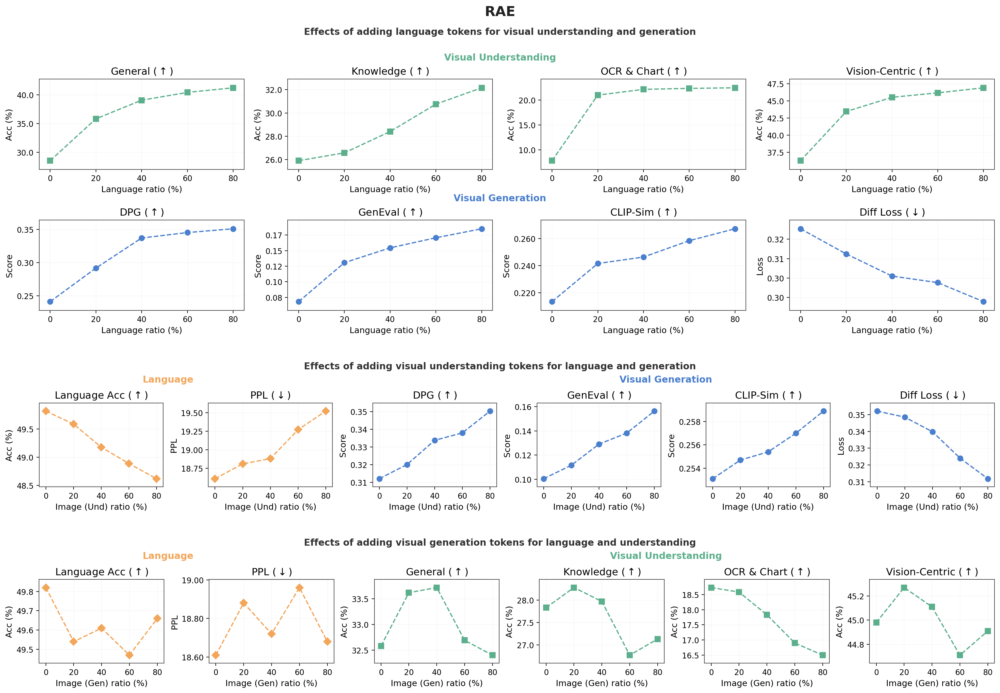
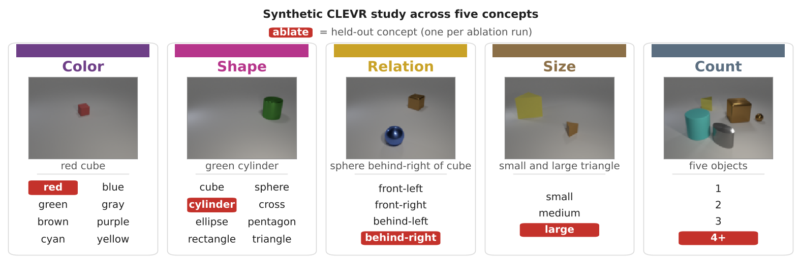
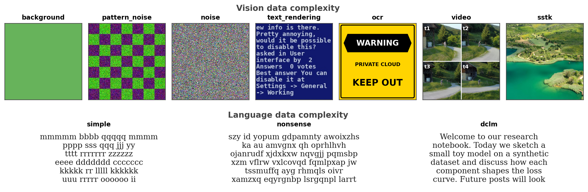
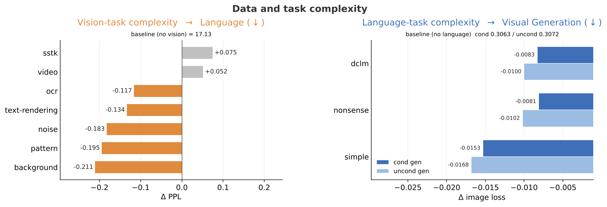
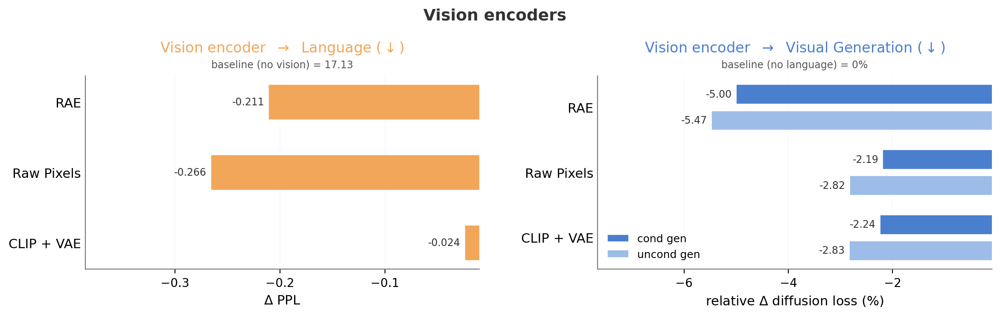
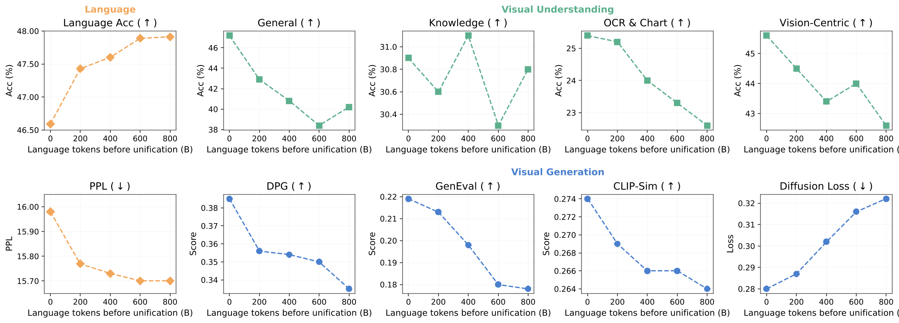

1
1
 2
2
1. Demystifying Modality Knowledge Flow
How does knowledge move between language, visual understanding, and visual generation in a unified network? We organize the study in two stages: first on large-scale real-world data to identify broad transfer patterns, then on controlled CLEVR data to isolate concept-level mechanisms.
Part 1A Modality transfer on real-world data Expand
The real-world study trains unified models from scratch, adding more of one modality's data on top of a fixed counterpart allocation and reading off the effect on the other capabilities. The same trends hold across visual tokenizers.

Effect of adding more of each modality's data on the other capabilities, spanning language axes, understanding metrics, and generation results.
Scaling language lifts every understanding axis and generation metric; scaling understanding strongly boosts generation but mildly trades off pure language; scaling generation is roughly neutral. In short, knowledge flow is directional, language→vision and understanding→generation, rather than symmetric.
Part 1B Controlled CLEVR concept transfer Expand
The CLEVR study creates parallel generation and understanding streams from scene graphs, then removes target concepts from one modality stream while keeping the other intact. The setup below defines the controlled leave-one-concept-out protocol.

Target concepts are removed from either the generation stream or the understanding streams while all other data shards are kept fixed. This isolates transfer for color, shape, spatial relation, size, and count.
We first ask whether a concept learned through one objective can be used zero-shot by the other objective, without any explicit exposure in that target stream.

Zero-shot transfer for each concept when it is held out of the target stream.
Knowledge flow is concept-dependent: low-level color and shape fail to transfer in both directions, while structural concepts (relation, size, count) transfer from understanding to generation but not back. So understanding helps generation zero-shot, whereas generation barely helps understanding.
Since color and shape fail zero-shot, we then reintroduce the missing concept during fine-tuning and measure whether prior exposure in the other modality accelerates recovery.

Fine-tuning recovery curves for color and shape, with and without prior exposure in the other modality.
Even where zero-shot transfer fails, generation plants a latent prior: prior generation exposure sharply speeds up color/shape recovery during fine-tuning. Generation therefore aids understanding indirectly, by accelerating low-level concept acquisition rather than through direct transfer.
Takeaway 1: Modality knowledge flow is asymmetric and concept-dependent: language acts as a universal booster for all visual tasks, visual understanding is a strong prior for generation, and visual generation has largely neutral effects, mainly helping understanding indirectly by accelerating low-level concept acquisition.
2. Modality Synergy vs. Competition
Joint multimodal training is not automatically synergistic. We dissect synergy and competition along two axes: data/task complexity, and the exact Transformer components that are shared or decoupled across modalities.
Part 2A Data and task complexity Expand
A fixed 100B-token budget is split evenly between language and image generation; one stream is held fixed while the other climbs a complexity ladder, with interference read as text perplexity (vision→language) and diffusion loss (language→vision) against unimodal baselines.

Visual and language streams escalated from simple synthetic samples to complex real-world data.

Cross-modal interference as one stream climbs the complexity ladder, measured against unimodal baselines.
Simple counterparts (solid backgrounds, patterns, repeated-letter text) push the partner below its unimodal baseline (synergy), while complex data (video, natural images) pushes it above (competition), and the effect is symmetric across both modalities. So task complexity largely determines whether modalities help or compete.
Part 2B Architectural choices for promoting synergy Expand
With a balanced language/multimodal mixture fixed, we localize where synergy and competition arise inside the Transformer block. We vary sharing in three component groups, FFN, Attention, and FinalNorm, and study five representative designs: fully shared dense blocks, FFN-only decoupling, FFN+Attention decoupling, FFN+FinalNorm decoupling, and fully split blocks.

Performance of the five sharing designs, from fully shared dense blocks to fully split blocks.
Fully shared dense blocks suffer the worst competition and fully split blocks lose synergy; decoupling only the FFNs is best, keeping attention and normalization shared as the cross-modal bridge. In other words, competition lives in the FFNs and synergy in shared attention/norm, so split FFNs with shared attention are a strong design choice.
Part 2C Generalization across vision encoder designs Expand
Are these synergies tied to a specific visual representation? Reusing the Part 2B split-training protocol with synergy-maximizing probes, we repeat the study across three tokenization designs: the default RAE (based on SigLIP-2), Raw Pixels (encoder free), and the decoupled CLIP + VAE.

Effect of each encoder design on language perplexity (ΔPPL) and on relative image loss (%) for conditional and unconditional generation.
Synergy holds across all three designs. Even Raw Pixels, with no semantic prior, gives the largest language gain (ΔPPL −0.266 vs. RAE −0.211), and decoupled CLIP + VAE still boosts generation despite separate latent spaces. So a pre-aligned or shared vision space is not required for synergy, which is a fundamental property of joint pretraining driven by task objectives and parameter sharing.
Takeaway 2: Modality interaction is governed by task complexity and parameter sharing: simple tasks act as cross-modal boosters while complex tasks trigger capacity competition that outweighs synergy, and architecturally, sharing attention and normalization fosters synergy while decoupling feed-forward networks mitigates competition. These effects hold across multiple vision tokenizers.
3. The Necessity of Early Unification
A common recipe is to pretrain a language model first and align visual capabilities later. We test this temporal question in two steps: when vision should enter pretraining, and whether modalities can be learned as separate sequential stages.
The results challenge late-alignment heuristics: early, simultaneous unification is better for native visual understanding and generation. We then inspect the model internals to explain why late visual integration leaves the visual pathway under-active.
Part 3A Early unification vs. late unification Expand
Holding the total compute budget fixed at 1T tokens, this study varies how many pure-language tokens are consumed before visual data enters the unified training mix: 0B, 200B, 400B, 600B, or 800B.

Language, understanding, and generation metrics as the pure-language warm-up before unification grows from 0B to 800B.
Extending the pure-language phase yields early language gains that soon plateau, while steadily degrading most visual benchmarks (General, OCR & Chart, Vision-Centric, and all generation metrics). A brief warm-up provides a useful text prior, but delaying unification further offers little language benefit while the model learns less visual understanding and generation.
Part 3B Sequential vs. joint training Expand
This study fixes a 1T-token budget and a 50/25/25 language/understanding/generation mix, then tests all six possible modality orderings. Each sequence is run with and without a 12.5% replay buffer of previously seen modalities.

Joint training versus all six sequential modality orderings, with and without a 12.5% replay buffer.
Joint training dominates all six sequential orderings across nearly every metric, and replay only slightly mitigates forgetting without recovering the lost cross-modal synergy. Sequential curricula thus cannot substitute for simultaneous joint training.
Part 3C Why late alignment creates vision laziness Expand
We show vision laziness, where a strong language backbone is allowed to harden before vision enters, so the model can lean on language priors instead of committing capacity to vision. We study this through four diagnostic axes. All runs share the same data mix, recipe, and 200B-token late-alignment continuation, and the vision pathway is always randomly initialized from scratch, only the starting language checkpoint changes from 0B to 800B. Any change in the vision branch is therefore a clean measure of how much vision the model actually commits to learning.
Axis 1 Training-time Activation L2 of img_ffn
During training, we record the L2 norm of the image-side feed-forward output across optimization steps. Lower norms mean the vision branch is contributing less while the model is being trained on a vision-conditioned objective.
Axis 2 Embedding L2 Norm of Special Image-Wrapper Tokens
The special image-wrapper tokens, such as begin_of_img and end_of_img, pass through the language FFN. Their embedding norms measure how much the language pathway reshapes itself to accommodate image segments.
Axis 3 Inference-time Per-Element Activation of img_ffn
During real vision forwards, we hook the image-side FFN and measure per-element output magnitude. This shows how much visual computation the model performs when generating an image or answering from an image.
Axis 4 Inference-time Attention on Image Tokens
At inference time, we measure how much attention is placed on image tokens: image-patch queries attending to image patches for generation, and text queries attending to image patches for understanding.

The four vision-laziness diagnostics across starting language checkpoints (0B–800B).
All four diagnostics move together as the language warm-up grows: training and inference activations in the vision branch fade, image-wrapper token norms shrink, and attention drifts off image tokens. In short, a more pretrained language trunk commits less computation to vision, so the model grows progressively lazier at using the visual pathway.
Takeaway 3: Early and simultaneous unification is highly beneficial. Delaying visual integration weakens visual capabilities, sequential curricula are prone to forgetting and fail to recover joint-training synergy, and late alignment encourages vision laziness rather than fully engaged visual pathways.
4. Designing Unified Pretraining Recipes
We turn the preceding findings into concrete recipes. Since knowledge flow is asymmetric, generation gives little back, an optimal mix spends most of the budget on language and understanding to drive generation. We first search for the best mixing ratios, then validate at scale.
Part 4A Optimizing data-mixing ratios Expand
A grid search over mixing ratios across 1T-token runs, along three axes: Fix MM sweeps language 10–90% with the rest split evenly; Fix Lan fixes language at 50% and sweeps understanding vs. generation; Next fixes language at the optimal 70% and tunes the visual split.
| Mix % | Language | Visual Understanding | Visual Generation | ||||||||||
|---|---|---|---|---|---|---|---|---|---|---|---|---|---|
| L | U | G | PPL↓ | Acc↑ | Gen↑ | Know↑ | OCR↑ | V-Ctr↑ | Avg↑ | DPG↑ | GenEval↑ | CLIP-Sim↑ | DiffLoss↓ |
| Fix MM | |||||||||||||
| 10 | 45 | 45 | 19.27 | 41.89 | 37.9 | 26.9 | 22.9 | 42.9 | 32.7 | 0.326 | 0.148 | 0.256 | 0.298 |
| 20 | 40 | 40 | 17.51 | 44.46 | 45.7 | 30.8 | 24.0 | 44.0 | 36.1 | 0.395 | 0.189 | 0.273 | 0.280 |
| 30 | 35 | 35 | 16.73 | 45.03 | 43.1 | 29.9 | 24.9 | 42.2 | 35.0 | 0.361 | 0.183 | 0.273 | 0.283 |
| 40 | 30 | 30 | 16.31 | 45.79 | 46.1 | 31.2 | 24.2 | 45.6 | 36.8 | 0.331 | 0.186 | 0.269 | 0.295 |
| 50 | 25 | 25 | 15.98 | 46.59 | 47.2 | 30.9 | 25.4 | 44.6 | 37.0 | 0.385 | 0.219 | 0.274 | 0.280 |
| 60 | 20 | 20 | 15.81 | 46.70 | 44.6 | 33.0 | 24.8 | 43.9 | 36.6 | 0.387 | 0.203 | 0.275 | 0.288 |
| 70 | 15 | 15 | 15.68 | 46.99 | 48.1 | 32.3 | 25.2 | 46.6 | 38.1 | 0.399 | 0.219 | 0.273 | 0.300 |
| 80 | 10 | 10 | 15.57 | 46.85 | 45.9 | 32.8 | 24.0 | 45.2 | 37.0 | 0.388 | 0.216 | 0.271 | 0.287 |
| 90 | 5 | 5 | 15.48 | 48.08 | 43.7 | 31.8 | 21.4 | 46.3 | 35.8 | 0.336 | 0.204 | 0.273 | 0.289 |
| Fix Lan | |||||||||||||
| 50 | 5 | 45 | 16.05 | 45.26 | 43.8 | 29.4 | 23.7 | 43.1 | 35.0 | 0.358 | 0.206 | 0.273 | 0.279 |
| 50 | 10 | 40 | 16.03 | 46.18 | 45.9 | 31.0 | 24.2 | 45.6 | 36.7 | 0.401 | 0.221 | 0.281 | 0.280 |
| 50 | 15 | 35 | 16.06 | 46.42 | 46.6 | 32.1 | 23.4 | 45.4 | 36.9 | 0.370 | 0.193 | 0.273 | 0.283 |
| 50 | 20 | 30 | 16.02 | 46.17 | 46.8 | 31.2 | 23.5 | 45.2 | 36.7 | 0.390 | 0.199 | 0.274 | 0.291 |
| 50 | 25 | 25 | 15.98 | 46.59 | 47.2 | 30.9 | 25.4 | 44.6 | 37.0 | 0.385 | 0.219 | 0.274 | 0.280 |
| 50 | 30 | 20 | 16.01 | 46.05 | 45.5 | 31.1 | 25.2 | 44.7 | 36.6 | 0.370 | 0.208 | 0.273 | 0.289 |
| 50 | 35 | 15 | 16.05 | 45.85 | 47.0 | 32.5 | 23.8 | 46.0 | 37.3 | 0.399 | 0.199 | 0.275 | 0.282 |
| 50 | 40 | 10 | 16.00 | 46.14 | 47.7 | 32.9 | 26.5 | 45.7 | 38.2 | 0.420 | 0.216 | 0.276 | 0.287 |
| 50 | 45 | 5 | 16.03 | 46.14 | 46.9 | 32.3 | 25.8 | 46.1 | 37.8 | 0.392 | 0.200 | 0.269 | 0.293 |
| Next | |||||||||||||
| 70 | 5 | 25 | 15.67 | 46.55 | 47.0 | 32.9 | 23.9 | 43.5 | 36.8 | 0.375 | 0.204 | 0.271 | 0.282 |
| 70 | 10 | 20 | 15.71 | 46.34 | 46.8 | 30.6 | 22.7 | 44.3 | 36.1 | 0.358 | 0.206 | 0.273 | 0.286 |
| 70 | 15 | 15 | 15.68 | 46.99 | 48.1 | 32.3 | 25.2 | 46.6 | 38.1 | 0.399 | 0.219 | 0.273 | 0.300 |
| 70 | 20 | 10 | 15.65 | 46.65 | 48.0 | 31.9 | 26.3 | 46.3 | 38.1 | 0.401 | 0.221 | 0.272 | 0.293 |
| 70 | 25 | 5 | 15.68 | 46.86 | 48.3 | 32.7 | 25.8 | 47.1 | 38.5 | 0.450 | 0.237 | 0.275 | 0.287 |
Table 1: Grid search of data-mixing ratios across three axes. Language needs a dominant token share, while visual capabilities peak at highly asymmetric ratios. The optimal configuration emerges in the “Next” sweep at a 70/25/5 split.
Data needs are sharply asymmetric: language needs the bulk of the budget, understanding peaks near 25%, and generation reaches near-peak quality with very little data. Cutting generation to just 5% even maximizes both understanding and generation scores, the priors from language and understanding do the heavy lifting.
Part 4B Validating findings at scale Expand
We pretrain 13.5B MoE models (1.5B active) on 2T tokens, comparing each design choice against a Balanced Recipe (L50/U25/G25). Full uses the asymmetric L70/U25/G5 mix; Dense Model is a 3.5B dense baseline; Late Fusion adds vision only after 60% of training.
| Model | Language | Visual Understanding | Visual Generation | ||||||||
|---|---|---|---|---|---|---|---|---|---|---|---|
| PPL↓ | Acc↑ | Gen↑ | Know↑ | OCR↑ | V-Ctr↑ | Avg↑ | DPG↑ | GenEval↑ | CLIP-Sim↑ | DiffLoss↓ | |
| Balanced Recipe | 11.97 | 52.86 | 51.50 | 38.90 | 25.15 | 50.14 | 41.42 | 0.676 | 0.467 | 0.310 | 0.261 |
| Dense Model | 12.14 | 52.03 | 50.12 | 36.66 | 25.43 | 49.74 | 40.49 | 0.667 | 0.459 | 0.308 | 0.266 |
| Late Fusion | 12.25 | 51.78 | 49.89 | 37.03 | 26.22 | 49.50 | 40.66 | 0.672 | 0.471 | 0.308 | 0.269 |
| Full | 11.67 | 54.31 | 53.63 | 40.11 | 27.23 | 51.33 | 43.08 | 0.689 | 0.482 | 0.312 | 0.272 |
Table 2: Scaling results and controlled baselines at 13.5B MoE / 2T tokens, validating three design choices, data mixture (vs. Balanced Recipe), architecture (vs. Dense Model), and unification timing (vs. Late Fusion).
Every comparison reproduces the small-scale findings. The asymmetric mix wins on language and understanding and even improves text-to-image alignment, despite 5× fewer generation tokens; MoE beats the dense baseline across the board; and early unification beats late fusion on every axis. Our findings scale reliably.
Takeaway 4: We validate main findings at scale and obtain a practical recipe: spend most of the budget on language and understanding (L70/U25/G5), give each modality-specific FFNs while sharing attention and normalizations, and train all modalities in a unified manner from beginning. This composition scales reliably and makes generation nearly free.
FAQ
What is vision laziness?
Vision laziness happens when late visual integration lets the model lean on language priors instead of actively learning vision components. Internally, visual FFNs, image-wrapper tokens, and attention to image tokens all become weaker.
What are the main limitations of this study?
The study focuses on text and static images. Extending the same principles to video, audio, actions, and much larger frontier-scale systems remains open.
Why use modality-specific FFNs but shared attention and normalization?
FFNs need modality-specific capacity to avoid competition. Attention and normalization should stay shared because they work better as the cross-modal bridge.
Why can visual generation use only a small data share?
When pretraining from scratch, language and visual understanding first build semantic and visual foundations, and those foundations transfer strongly to boost generation. Generation itself transfers back much less, so it does not need a large early data share.
Citation
@article{han2026towards,
title={Towards Physics of Multimodal Pretraining: Knowledge Flow, Modality Synergy, Early Unification, and Recipes},
author={Han, Junlin and Tong, Shengbang and Fan, David and Torr, Philip and Kokkinos, Filippos and Lewis, Mike},
journal={arXiv preprint},
year={2026}
}